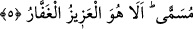
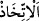
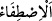
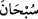
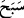

Müşriklerin ‘Allah çocuk edindi’ diye iddiâ ettikleri gibi “Eğer Allah bir evlât
edinmek isteseydi” bunu Meryem’e, Îsâ’ya veya Üzeyr’e tahsis etmez “elbette
yarattıklarından”
yarattıkları
cinsinden
“dilediğini
seçerdi”
tercih
eder,
yarattıklarından daha değerli ve güçlü bir cins yaratır ve onu çocuk edinirdi. Fakat
böyle bir şey mümteni’/imkansız olduğundan, bunu yapmaz. Çünkü mümteni olan bir
şeye kudret ve irâde taalluk etmez. Allah Teâlâ’nın emri/işi kullarından dilediklerini
seçip (ıstıfâ) kendisine yaklaştırmaktır. Melekler ve bazı insanlar hakkında böyle
muâmelede bulunmuştur. Nitekim Allah Teâlâ şöyle buyurur: “Allah meleklerden ve
insanlardan birtakım elçiler seçer” (el-Hac, 22/75). İşte bu sebeple (tefsîri yapılan)
âyette “ kelimesi yerine “ kelimesi kullanılmıştır. Bazıları âyetin
mânâsını, ‘Şayet Allah yarattıklarından çocuk edinecek olsaydı, bunu müşriklerin
tercihine göre edinmeyip, aksine yarattıklarından dilediğini seçmek (ıstıfâ) sûretiyle
edinirdi’ şeklinde vermişlerdir.
Kâşifî ise şöyle der: “İstediğinde, yarattığı şeyin en değerli, en güzel ve en
mükemmelinden dilediğini seçerdi. Ancak yaratılan Yaratan’ın benzeri değildir. Baba
ile oğul arasında benzerlik şarttır. Halbuki O’nun oğlu yoktur.”
“O yücedir.” “ kelimesi, uzak oldu anlamındaki “ fiilinin masdarıdır. Yâni
Allah Teâlâ zâtı itibarıyle çocuk edinmekten de kendisine nisbet ettikleri çocuklardan ve
dostlardan da münezzehtir. Ya da “ kelimesi kulların lisanından söylenen özel bir
kelimesi kulların lisanından söylenen özel bir
tesbîh ifâdesidir. “Allah’ı O’na yaraşır bir tesbihle tesbih ederim” ya da “O’nu şânına
yaraşır bir tesbihle tesbih edin” demektir.
“O,” ikincisi olmayan “tek”tir. Çocuk ise babasının cinsinden ve benzeri olmak
hasebiyle, onun ikincisidir. Bahru’l-ulûm’da der ki: “Vâhid, zat ve sıfatları itibarıyle
mürekkeb ve benzeri olmaktan yüce olan mevcûd demektir. Dolayısıyla böyle olan bir
zâtın çocuğu olmaz. Çünkü çocuk, zat ve sıfatları bakımından babasına benzer.”
“Ve kahhâr olan” ulûhiyyet vasfı ile muttasıf olan “Allah’tır.” ki O’nun kahhâriyeti
de herhangi bir cins ve benzer kabul etmez.
el-İrşâd’da şöyle der: “Bütün varlıkların üstünde bir güce sâhip olan Kahhâr olan
Allah’ın fânî varlıklardan kendi makamına kaim olacak birini edinmesi nasıl tasavvur
edilebilir?!”
5. Allah, gökleri ve yeri hak ile yarattı. Geceyi gündüzün üzerine örter, gündüzü